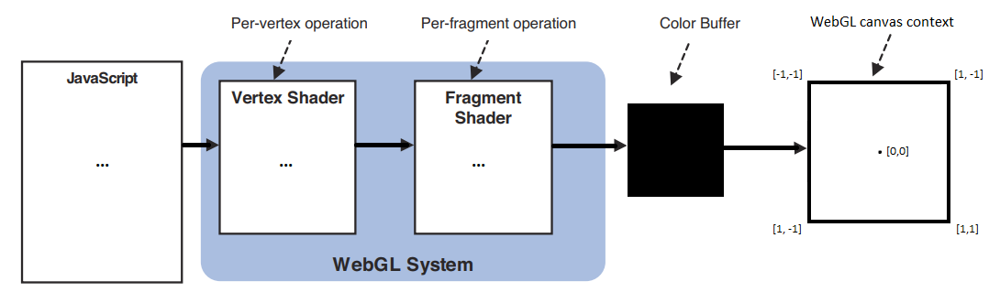

WebGL guide (part 1/2)
May 2020 - July 2021
News
- 2020-05-29: Hello GameDevJS Weekly readers!
- 2020-05-27: Hello Frontend Focus readers!
- 2020-05-22: Hello JS Weekly readers!
- 2020-05-17: Hello r/JavaScript, r/WebGL and r/FrontEnd!
Feedbacks are welcome! You can contact me on Twitter or Github.
Introduction
This guide is a complete, summarized WebGL tutorial, with tiny interactive demos in each chapter.
It's mainly inspired by the book WebGL Programming Guide and the websites Webgl2Fundamentals, LearnWebgl & MDN.
Starting nearly from scratch, you'll be able to create your own 3D interactive scenes without needing to use any library or framework: only vanilla JS & WebGL.
My goal was to gather all the information and tricks about WebGL I found scattered everywhere, and present them in a short and helpful way. I hope you'll enjoy it!
The demos, files and tools presented in this guide are all available on Github (including my helper functions placed in webgl.js, shapes.js and matrix.js).
If you're interested in WebGL code golfing, raymarching and signed distance functions, check out Webgl quest and Webgl quest 2, that I made with the Codegolf Team.
Special thanks to Inigo Quilez, Kevin Chapelier, Freya Holmér, Adrien Guéret, Damien Allonsius, Sampson Savinel and Stijn Raaijmakers for their tips, gifs and proofreading!
Table of contents
Introduction Maths required to follow this guide
- Hello, point
- Custom values: attributes and uniforms
- Drawing many points, a matter of continuity
- Drawing lines and triangles
- Multi-attribute buffer & varyings
- Translate, rotate, scale
- Texturing
- The 3D camera
- Indexed vertices
- Hello cube
- How to color each face of the cube
- Lighting and shading
- How to transform a 3D model
- Drawing many cubes
- Hierarchical objects
What is WebGL?
Presentation
WebGL is a JavaScript API designed to process and draw 2D and 3D graphics very fast in a Web browser, by using the processing power of the GPU.
It's based on OpenGL ES and is programmed using shaders coded in GLSL (OpenGL Shading Language), a language similar to C and C++.
A scene rendered by WebGL is mainly made of vertices (points in 3D space, with coordinates X, Y, Z), which can be drawn as points, lines or triangles (colored, shaded or textured),
but it's possible to go way further and display interactive 3D scenes with effects like shadows, reflections, particles, fog, blur, etc.
However, WebGL doesn't have ready-to-use functions to place a camera, render points, text, polygons or special effects on a canvas. You need to tell it how to do that at a much lower level.
Two versions of the WebGL API exist: WebGL 1.0, supported by 98% of browsers, and its evolution WebGL 2.0, supported by 77% of browsers as of july 2021, according to caniuse.
This guide will focus on WebGL 1.0, but all the features added in WebGL 2.0 will be explained at the end if you want to take the plunge.
The workflow of a WebGL program can be summarized like this:
- The JavaScript code initializes the WebGL program and pilots it to draw graphics on the webgl context of a HTML5 canvas.
- A first GLSL script called vertex shader is executed for every vertex of the scene. It computes an abstract, mathematical model of the scene and hands it to a second GLSL script.
- The second GLSL script, called fragment shader, is executed for every visible fragment (pixel) of the canvas. It computes each fragment's color, in a process called rasterization.
- The fragments constitute a bitmap image stored in a color buffer, which is finally displayed on the canvas.

The GLSL language
The shaders source code can be placed in a JavaScript string (or loaded from separate files).
Here are the key features of their syntax:
- An int is a whole number: 0, 1, 2, -10,...
- A float is a number written with at least one decimal: 0.0, 0.1, 1.0, -10.5,...
- A bool is a boolean number. Its possible values are true and false.
- A vec4 is an array of 4 floats representing vertex coordinates or a 3D vector (x, y, z, w), or a color (r, g, b, alpha). The types vec2 (x, y) and vec3 (x, y, z / r, g, b) exist too.
- A mat4 is a matrix (a grid) of 4 x 4 floats, useful for transforming vertex coordinates and vectors in 3D. The types mat2 (2x2) and mat3 (3x3) exist too.
- A sampler2D is a reference to a texture image; a samplerCube is a reference to a "3D texture" (a set of 6 textures mapped on a cube).
- A variable is declared with its type, for example:
,int i = -1;
orfloat f = 2.0
.vec4 v = vec4(1.0, 2.0, 3.0, 4.0); - A constant is a variable with a fixed value:
.const int c = 100; - The xyzw / rgba components of a vector can be extracted or swizzled (recomposed) in another vector, for example:
,float f = v.x;
,vec3 rgb = v.rgb;
.vec4 w = v.zxxy; - Semicolons
are mandatory at the end of each instruction (variable declaration or math operation).; - Math functions: cos, sin, tan, pow, exp, log, log2, sqrt, abs, sign, floor, ceil, round, trunc, fract, mod, min, max, clamp, mix, step, length, distance, dot, cross, reflect, normalize...
- Math operators (=, +, -, *, /, &&, ||, ==, !=, >, >=, <, <=, ++, --, ^^, +=, -=, *=, /=) only work between variables of the same type or same length (ex: int + int, float / float, mat4 * vec4 ...).
- Type casting allows to convert a type into another, when it's possible. Ex:
.bool b = true; int i = int(b); /* i = 1 */ float f = float(i); /* f = 1.0 */ - Tests and loops are also available (if, else, switch, for, while), but loops must have a constant limit. (you can't do
if j is variable).for(int i = 0; i < j; i++){...} - The entry point of each shader (where their execution starts) is a
function.void main(){...} - Custom functions can also be created and called by main() or by each other, but recursion isn't allowed.
- The precision of ints, floats and Sampler2Ds (lowp / mediump / highp) can be set in each shader with a directive, like
orprecision highp int;precision mediump float;
These directives must be at the beginning of the shader's code, however only the float precision is mandatory in the fragment shader, all the others have values by default.
Lowp corresponds to 8-bit values, mediump: 10-bits, and highp: 16-bits. Lowp is very limited, mediump is fine in most cases, and highp is better but not supported on all devices. - To work properly, the vertex shader must set a global variable gl_Position containing the coordinates of the current vertex (plus gl_PointSize if it's rendering individual points).
- The fragment shader must set a global variable gl_FragColor containing the color of the current fragment.
It has access to 3 global variables: gl_FragCoord (window coordinates), gl_PointCoord (coordinates inside a point) and gl_FrontFacing (current triangle orientation).
Communication between JavaScript and WebGL

Four main mechanisms exist to send data between the different scripts:
- Attributes are global variable passed by JavaScript to the vertex shader. Their value can change for each vertex (ex: vertex coordinates).
- Uniforms are global variables passed by JavaScript to both vertex and fragment shaders (ex: a color). Their value stays constant for an entire frame.
- Varyings are not accessible by JavaScript. They can only be set by the vertex shader and read by the fragment shader.
- Data buffers are big arrays of numbers passed by JS to the vertex shader, which will read and process it one little chunk at a time.
Each attribute, uniform and varying must be declared before main() in the shaders that use them.
Don't worry, these features will be explained and illustrated in the next chapters.
Maths required to follow this guide
If you're not friend with maths, don't worry! 3D programming actually requires a very limited subset of maths, which is summarized below:
The basics of geometry:
- A point in 2D has two spatial coordinates (X horizontally, Y vertically).
- A point in 3D has a third Z coordinate for depth.
- The origin is the point where all the coordinates are equal to 0.

The basics of trigonometry:
- An angle can measure between 0 and 360 degrees, which is equivalent to: 0 to 2π radians (π radians equals half a turn).
- An angle in degrees can be converted in radians by multiplying it with π/180.
- An angle in radians can be converted in degrees by multiplying it with 180/π.
- The trigonometric circle or "unit circle" is a circle of radius 1, centered on the origin of a 2D plane. Every point of this circle corresponds to an angle, measured anti-clockwise:
The rightmost point represents the angle 0 (or 2π rad), the topmost point is π/2 rad, the leftmost is π rad, and the bottom is 3π/2 rad.
- An angle bigger than 2π or smaller than 0 is equal to the same angle modulo 2π (ex: 5π rad = π rad; -π/2 rad = 3π/2 rad).
- The cosine of an angle "α" is the X coordinate of the corresponding point on the trigonometric circle, and oscillates between -1 and 1.
- The sine is the Y coordinate of the same point, and also oscillates between -1 and 1.
- The tangent is the length of the segment perpendicular to the radius, between this point and the X axis. Its value goes between -∞ and +∞, and is equal to tan(α) = sin(α) / cos(α).

GIF by Freya Holmér
Vectors:
- A vector is an array of numbers. It can represent either a point in space (a vertex), or a direction (an offset).
- When it represents a point, it's a list of coordinates.
For example, [2,4] can represent the X and Y coordinates of a 2D point, and [3,5,2] the X, Y and Z coordinates of a 3D point. - When it's a direction (from a position in space to another position), it represents how the offset is applied in each coordinate. You can imagine it like an arrow.
for example [1,2,3] corresponds to an X offset of 1 unit, a Y offset of 2 units and a Z offset of 3 units. - Contrary to vertices, direction vectors don't have a position. They only represent an offset, and this offset can start from anywhere.
- For two points A and B, you can build a vector AB (going from a point A to a point B) like this: AB = [xB - xA, yB - yA, zB - zA].

Operations on vectors:
- Adding two vectors consists in adding their terms one by one: V + W = [xV + xW, yV + yW, zV + zW].
- Scaling a vector consists in multiplying all its terms by a given amount: V * n = [xV * n, yV * n, zV * n].
- Measuring the length (or magnitude) of a vector is similar to measuring the distance between two points with Pythagore's theorem: ||V|| = sqrt(xV² + yV² + zV²).
- Normalizing a vector consists in adjusting its length to 1 unit, without changing its direction. It's equivalent to scaling it by 1 / ||V||.
- The relative angle between two normalized vectors V and W can be computed using the dot product: V.W = xV * xW + yV * yW + zV * zW.
The dot product is equal to the cosine of the angle between the vectors. For example, it's 1 if they're equal, 0 if they're perpendicular, -1 if they're opposite.
GIF by Freya Holmér
- The cross-product of two vectors V and W is a vector perpendicular to both vectors.
It can be computed like this: V×W = [yV*zW - zV*yW, zV*xW - xV*zW, xV*yW - yV*xW].
GIF by Freya Holmér
- The normal of a triangle ABC is a vector perpendicular to its surface, more precisely, perpendicular to any vector inside the triangle.
It can be computed as the cross-product of the vectors AB and BC, if the points A, B and C are arranged counter-clockwise. (if clockwise, the normal will point to the opposite direction).
The normal of a triangle, as its name suggests, must be normalized, because it will often be involved in dot products.
Matrices:
A matrix is a grid of numbers. It represents a system of linear equations that can be applied to any vector with a multiplication.
Multiplying a matrix and a vector consists in computing the dot product of the vector with each line of the matrix.
For example, in 3D, the "identity" matrix below transforms a vector into itself (it's a neutral operation):
| × = |
1 * x + 0 * y + 0 * z = x
0 * x + 1 * y + 0 * z = y 0 * x + 0 * y + 1 * z = z |
If you use values different than 1 on the diagonal, the vector will be scaled:
| × = |
2 * x + 0 * y + 0 * z = 2x
0 * x + 3 * y + 0 * z = 3y 0 * x + 0 * y + -1 * z = -z |
And if you use the appropriate values in the other fields, you can perform a rotation:
- Along the X axis (angle φ in radians):
× =
- Along the Y axis (angle θ in radians):
× =
- Along the Z axis (angle ψ in radians):
× =
Operations on matrices:
- A matrix can be transposed by inverting its horizontal and vertical axis (the diagonal stays unchanged):
A = AT = - Two or more matrices of equal size can be multiplied together to combine (accumulate) their transformations.
The result of a matrix multiplication is a new matrix containing the dot products of each line of the first matrix with each column of the second matrix.
The combination order is important, and is from right to left. For example, a matrix that performs a translation T, then a rotation R, then a scale S is equal to S * R * T. - Finally, a matrix can be inversed. An inversed matrix cancels the transformation made by the original matrix:
A * A-1 = identity
A * A-1 * V = V
Homogeneous coordinates:
Finally, a little extension of the 3D vectors and matrices above, consists in giving them a fourth dimension, called W.
The goal is not to draw 4-dimensional objects, but to allow more operations on vertices, like translations and camera projections.
Those 4D vectors are called homogeneous coordinates and are noted [X, Y, Z, 1] for vertices, and [X, Y, Z, 0] for normals.
For example, here's the translation matrix that moves a point 2 units along X, 3 units along Y, and -1 unit along Z:
| × = |
1 * x + 0 * y + 0 * z + 2 * 1 = x + 2
0 * x + 1 * y + 0 * z + 3 * 1 = y + 3 0 * x + 0 * y + 1 * z + -1 * 1 = z - 1 0 * x + 0 * y + 0 * z + 1 * 1 = 1 |
Remarks:
- The (4D) transformation matrix performing a translation is an identity matrix, with the X, Y and Z offsets encoded on the last column.
- These offsets are multiplied by the fourth element of the 4D vector, that's why a point can be translated (W = 1) and a normal cannot (W = 0).
- The 3x3 matrix on the top left corner can still be used to perform rotations and scalings.
- When a vertex is rendered on the screen, only its X, Y and Z coordinates matter. It's W coordinate, only useful for computing translations and projections, is discarded.
Enough introduction, let's start this guide with our first WebGL demo!
2D graphics
Hello, point
Here's the simplest possible WebGL program, drawing a red, square point in the middle of the canvas.
It's a live demo, feel free to play with the code and change some values!
Demo
What happens here?
- Two JavaScript objects are essential in a WebGL app: the canvas context gl, returned by
, and program returned bycanvas.getContext('webgl')
(lines 4 & 37).gl.createProgram() - JavaScript also uses the functions createShader, shaderSource, compileShader, attachShader, linkProgram and useProgram to set up and run the WebGL app (lines 27-41),
and the functions clearColor, clear and drawArrays to set the default background color, clear the canvas and draw a point on it (lines 48-59). - The vertex shader (lines 7-15) sets the vec4 gl_Position (x, y, z, 1.0), and gl_PointSize (in pixels).
It is executed once, as there's only one vertex.
Since we're drawing in 2D, the point's Z coordinate is 0, while X and Y are in the range [-1 : 1]: within the bounds of the canvas, even if the canvas is not square!
The 4th vertex coordinate (W) is fixed to 1.0, and allows many transformations detailed in the next chapters. - The fragment shader (lines 18-24) sets the vec4 gl_Fragolor (r, g, b, alpha), where each component is in the range [0 : 1].
It is executed 100 times (once for each pixel inside the point).
It starts with a mandatory directive, used to define the precision of its floating numbers:
(lowp and highp are also available, but less useful).precision mediump float; - If an error occurs during the compilation, it's caught by getShaderInfoLog or getProgramInfoLog (lines 44-46) and logged in the browser's JS console.
Tips & tricks
- On some devices, the biggest supported point size is 62px (more info on webglstats).
- On some devices, the points may disappear entirely if their center is outside of the canvas (more info on webglfundamentals).
- The shaders' source code is placed in JS strings for simplicity. If you want to fraction your source code, it's possible to declare them in a separate JS files.
You can get rid of the JS strings by placing your shaders' code in text files (ex: shader.vert / shader.frag), load these files (with XHR / fetch), and pass their content to gl.shaderSource. - The program creation (lines 26 to 46) is always the same and pretty verbose, so we can put it in a compile() helper function and reuse it in the next chapters (see webgl.js):
// Compile a WebGL program from a vertex shader and a fragment shader
compile = (gl, vshader, fshader) => {
// Compile vertex shader
var vs = gl.createShader(gl.VERTEX_SHADER);
gl.shaderSource(vs, vshader);
gl.compileShader(vs);
// Compile fragment shader
var fs = gl.createShader(gl.FRAGMENT_SHADER);
gl.shaderSource(fs, fshader);
gl.compileShader(fs);
// Create and launch the WebGL program
var program = gl.createProgram();
gl.attachShader(program, vs);
gl.attachShader(program, fs);
gl.linkProgram(program);
gl.useProgram(program);
// Log errors (optional)
console.log('vertex shader:', gl.getShaderInfoLog(vs) || 'OK');
console.log('fragment shader:', gl.getShaderInfoLog(fs) || 'OK');
console.log('program:', gl.getProgramInfoLog(program) || 'OK');
return program;
}
Custom values: attributes and uniforms
Of course, WebGL wouldn't be interesting if it could just draw one hard-coded point.
To make it less rigid, we can give it custom values. This can be done with attributes (readable by the vertex shader) and uniforms (readable by both shaders).
- an attribute is variable and can contain a float or a vector (vec2, vec3, vec4). Your program should not exceed 16 attributes to work on all devices.
- An uniform is constant can contain an int, a float, a vector or a matrix (mat2, mat3, mat4). Your program should not exceed 128 vertex uniforms and 64 fragment uniforms.
Demo
What happens here?
- Position is declared with
, targeted withattribute vec4 position;
and set withposition = gl.getAttribLocation(program, 'position')
.gl.vertexAttrib4f(position, 0, 0, 0, 1) - Point size is declared with
, targeted withattribute float size;
and set withsize = gl.getAttribLocation(program, 'size')
.gl.vertexAttrib1f(size, 10) - Point color is declared with
, targeted withuniform float color;
and set withcolor = gl.getUniformLocation(program, 'color')
.gl.uniform1f(color, 1, 0, 0, 1)
Binding attributes and uniforms
Attributes can be set like this:
| Type | GLSL declaration | How to set its value in JS |
|---|---|---|
| float | | |
| vec4 | | |
And uniforms can be set like this:
| Type | GLSL declaration | How to set its value in JS |
|---|---|---|
| int | | |
| float | | |
| vec4 | | |
| mat4 | | |
(vec2 and vec3 are declared similarly to vec4, mat2 and mat3 similarly to mat4).
Tips & tricks
- The fourth value of a vec4 attribute is 1.0 by default, so it's frequent to encounter some code that only sets x, y and z with
.gl.vertexAttrib3f(position, 0, 0, 0) - Boolean uniforms also exist in the language's specs, but don't work on all devices. If you need one, consider replacing it with an int or a float.
- Matrix attributes also exist in the language's specs, but JavaScript doesn't have a convenient method to set their value, and they're not very useful anyways.
- You can draw as many points as you want by setting new attributes / uniforms values and calling drawArrays again.
The same shaders will be executed each time but with different inputs.
For example, you can add these lines to add 2 other points:
gl.vertexAttrib3f(position, 0.25, 0, 0); gl.uniform4f(color, 0, 1, 0, 1); // green gl.drawArrays(gl.POINTS, 0, 1); gl.vertexAttrib3f(position, 0.5, 0, 0); gl.uniform4f(color, 0, 0, 1, 1); // blue gl.drawArrays(gl.POINTS, 0, 1);

- Inside the fragment shader, you have access to a gl_PointCoord vec2 telling where the fragment is placed in the point (x and y coordinates are between 0 and 1).
Moreover, in GLSL, you can prevent a fragment from being rendered using the discard; statement, and measure a distance between two points with distance().
As a result, you can make a rounded point by discarding every fragment further than a radius of 0.5 from the center:
float d = distance(gl_PointCoord, vec2(0.5, 0.5)); if(d < .5) { gl_FragColor = vec4(1.0, 0.0, 0.0, 1.0); } else { discard; }

Drawing many points, a matter of continuity
By default, WebGL has no problems calling gl.drawArrays many times in a row, but only if these calls happen in the same timeframe.
Here's a program trying to draw a new random point every 500ms:
Demo
What happens here?
As you can see, the canvas is not cleared (in black), but completely reset each time drawArrays() is called. This is the standard behavior when the draws happen at different moments.
To solve this, there are two solutions:
- Save the positions and colors of every new point in a JS array or object.
Then every 500ms, clear the canvas (to make the background black) and redraw all the saved points; - Force
when creating the WebGL context, as you can see by removing the commented code on line 4.{ preserveDrawingBuffer: true }
In this case, you won't have to clear the canvas if you want the old points to stay visible and immobile.
In both cases, the result will look like this:

Both solutions are okay in this example, but in real conditions (animated WebGL scenes with moving objects), you don't want the previous frames to stay visible.
So the only solution will be to clear the canvas and redraw everything at each new frame.
Drawing lines and triangles
The next step consists in declaring many points at once, and telling WebGL how to display them: as points, as lines or as triangles.
To do this, we'll use a data buffer (an array of binary numbers) to send vertex properties from JS to the fragment shader, via an attribute. The following types are supported:
| Name | Bounds | Bytes | JS container | WebGL type |
|---|---|---|---|---|
| Unsigned byte | 0 ... 255 | 1 | new Uint8Array([...]) | gl.UNSIGNED_BYTE |
| Signed short integer | −32,768 ... 32,767 | 2 | new Int16Array([...]) | gl.SHORT |
| Unsigned short integer | 0 ... 65,535 | 2 | new Uint16Array([...]) | gl.UNSIGNED_SHORT |
| Signed integer | -2,147,483,648 ... 2,147,483,647 | 4 | new Int32Array([...]) | gl.INT |
| Unsigned integer | 0 ... 4,294,967,295 | 4 | new Uint32Array([...]) | gl.UNSIGNED_INT |
| Floating point number | -2128 ... 2127 | 4 | new Float32Array([...]) | gl.FLOAT |
Then, gl.drawArrays can render these vertices as points, lines and triangles in 7 different ways, by changing its first parameter:

Demo
Here's the simplest way to draw a colored triangle:
What happens here?
- A data buffer is filled with 3 points coordinates and bound to a position attribute with createBuffer, bindBuffer, bufferData, vertexAttribPointer & enableVertexAttribArray (lines 32-50).
- At the end, we tell gl.drawArrays to render these points as a triangle. As a result, every fragment inside the triangle will automatically reuse the "color" uniform variable (red).
- If you replace gl.TRIANGLES with gl.LINE_LOOP, only the lines between points 0-1, 1-2, and 2-0 will be rendered, with a line width of 1px (1 fragment).
You can also try gl.LINE_STRIP to trace lines between points 0-1 and 1-2, and gl.LINES to draw a line between points 0 and 1, as it only works on consecutive pairs of points.
Unfortunately, the line width can't be changed on most devices, so we have to "cheat" with triangles to make thicker lines (more info on MDN and mattdesl's website). - Lines and triangles do not need gl_PointSize to be set in the vertex shader. If you replace gl.TRIANGLES with gl.POINTS, you'll have to set gl_PointSize again or they won't appear.
Tips & tricks
- You can draw as many triangles as you want by adding vertex coordinates on line 33 and updating the vertex count on line 61.
- Remember that the X and Y vertex coordinates are in the range [-1:1], whatever the size of the canvas.
If the canvas is not square, you can compute its aspect ratio (width / height) and multiply all your X coordinates with it to cancel the distorsion. - In all the following chapters' demos, you can replace gl.TRIANGLES with gl.LINE_LOOP to see the scene in wireframe.
- WebGL does antialiasing (pixel smoothing) by default. This can be disabled with
, to save resources, especially on retina screens.canvas.getContext('webgl', {antialias: false}); - The buffer creation and binding is also quite verbose, so let's put it in the function buffer(), in webgl.js:
// Bind a data buffer to an attribute, fill it with data and enable it
buffer = (gl, data, program, attribute, size, type) => {
gl.bindBuffer(gl.ARRAY_BUFFER, gl.createBuffer());
gl.bufferData(gl.ARRAY_BUFFER, data, gl.STATIC_DRAW);
var a = gl.getAttribLocation(program, attribute);
gl.vertexAttribPointer(a, size, type, false, 0, 0);
gl.enableVertexAttribArray(a);
}
Multi-attribute buffer and varying color
Now, we want to give a different color to our three vertices, and draw a triangle with them.
The vertex colors can be transmitted to the fragment shader via a varying variable, to produce a gradient (this process is called color interpolation).
The X/Y/Z and R/G/B values for each vertex can be stored in two data buffers, or in an interleaved data buffer, like here:
Demo
What happens here?
- A buffer of 3 x 6 floats is initialized and bound to the program (lines 27-43).
- Then, for every chunk of 6 floats in the data buffer,
-
reserves the first 3 values for the attribute position (line 48),gl.vertexAttribPointer(position, 3, gl.FLOAT, false, FSIZE*6, 0);
-
reserves the last 3 values for the attribute color (line 60).gl.vertexAttribPointer(color, 3, gl.FLOAT, false, FSIZE*6, FSIZE*3); - The last two params of vertexAttribPointer (stride and offset) are counted in bytes, and the size of a data buffer item can be retrieved using BYTES_PER_ELEMENT (line 40).
- gl.enableVertexAttribArray (lines 56 and 68) finish binding the attributes to the verticesColors data buffer.
The data buffer is not named explicitly though (the last buffer bound to the WebGL program is used automatically). - The varying v_color is declared in both shaders.
- In the vertex shader, it receives the color of the current vertex.
- In the fragment shader, its value is automatically interpolated from the three vertices around it:

Tips and tricks
- It's a good practice to prefix every varying name with "v_".
- A WebGL program should not exceed 6 varyings to work on all devices.
- Color interpolation also works in LINES, LINE_STRIP and LINE_LOOP modes.
- Fun fact: most WebGL tutorials online stop when they reach this famous "tricolor triangle", but this one is different: we have much more to cover! ;)
- Contrary to POINTS mode (that has gl_PointCoords), in TRIANGLES mode there is no global variable indicating where the current fragment is situated inside the triangle.
But you have access to gl_FragCoords telling where the fragment is positioned on the canvas.
Translate, rotate, scale
If we want to move, rotate or scale a triangle, we need to know how to transform each of its vertices.
- Translation consists in moving all the vertices in a given direction (by increasing or decreasing their X/Y/Z coordinates).
- Rotation consists in moving the vertices around a pivot point, with a given angle (a full turn clockwise is 360 degrees or 2π radians).
- Scaling consists in making the triangle smaller or bigger by bringing the vertices closer or further from a pivot point.
These operations can be done component per component (compute the new value of X, then Y, then Z), but we generally use a much powerful tool: matrix transformations:
Each transformation can be written as a mat4 (a matrix of 4x4 floats), and applied to a vertex's homogeneous coordinates (vec4(X, Y, Z, 1.0)) with a multiplication.
| Transformation | Transformation applied to each vertex coordinates | transformation via a matrix
|
|---|---|---|
| Identity (no change) | x' = x
y' = y z' = z | = × |
| Translation along X, Y and Z axis | x' = x + Tx
y' = y + Ty z' = z + Tz | = × |
| Rotation around the X with an angle φ
(φ is in radians) | x' = x
y' = y cos φ - z sin φ z' = y sin φ + z cos φ | = × |
| Rotation around the Y with an angle θ | x' = x cos θ + z sin θ
y' = y z' = -x sin θ + z cos θ | = × |
| Rotation around the Z axis with an angle ψ | x' = x cos ψ – y sin ψ
y' = x sin ψ + y cos ψ z' = z | = × |
| Scaling along X, Y and Z axis | x' = Sx * x
y' = Sy * y z' = Sz * z | = × |
Demo
What happens here?
- This demo performs 3 transformations on the same triangle: translate, then rotate, then scale.
- These transformations can be done in this order by multiplying their matrices from right to left, and multiplying the resulting matrix product with the vertex coordinates (see line 15).
- These 3 matrices are declared in JS and sent to the fragment shader using uniforms (see lines 42 to 73).
- WebGL only accepts uniform matrices that are transposed (matrices with the horizontal and vertical axis inverted), so they were transposed manually in the JS code.
- The matrix multiplication is done in the vertex shader, which is very simple but not efficient, because it's recomputed for each vertex of the scene.
The best practice is to prepare the transformation matrix once, in the JS program, then send it to the vertex shader.
Tips: manipulating matrices in JS
As I said, the best practice is to declare and compute the global transformation matrix in JS, before sending it to the shader.
For many years, the best practice was to compute all the transformations manually, term by term, inside a Float32Array.
Many JS libraries can help you do that, the most famous is glMatrix.
However, in this guide, I will use a more recent JS API called DOMMatrix, designed to handle transformations for DOM elements, SVG graphics, and 2D/3D canvas.
This API has been considered absolutely too slow for WebGL for a long time (3 to 30 times slower than JS alone), but it's not the case anymore:
According to my perf tests, DOMMatrix is only 5-20% slower than JS at worst, and can still perform more than 30,000 matrix transformations per second, which is largely enough!
Here are the DOMMatrix methods that will interest us in this guide:
- A = new DOMMatrix() creates a 4x4 identity matrix.
- A = new DOMMatrix([m11, m21, m31, m41, m12, m22, m32, m42, m13, m23, m33, m43, m14, m24, m34, m44]) creates a 4x4 matrix from a list of 16 numbers.
- A.multiplySelf(B) computes A = A x B.
- A.preMultiplySelf(B) computes A = B x A.
- A.translateSelf(x, y, z) adds a translation to A.
- A.scaleSelf(sx, sy, sz, ox, oy, oz) adds a scaling to A, centered on the origin point o.
- A.rotateSelf(rx, ry, rz) adds a rotation to A. Rotates around Z, then Y, then X. The angles are in degrees.
- A.invertSelf() inverts A (if the inversion is impossible, the matrix is filled with NaN values).
- A.toFloat32Array() returns a Float32Array useable by the WebGL shders.
Unfortunately, the method transposeSelf doesn't exist yet, but can be replaced by this:
// Transpose a DOMMatrix
transpose = m => {
return new DOMMatrix([
m.m11, m.m21, m.m31, m.m41,
m.m12, m.m22, m.m32, m.m42,
m.m13, m.m23, m.m33, m.m43,
m.m14, m.m24, m.m34, m.m44,
]);
};This function and a few others that we'll see later, are present in my helper file matrix.js.
Tips: How to change the pivot point of a rotation
The rotateSelf method only allows to use the world's origin [0, 0, 0] as pivot point.
Imagine a triangle that is not centered on the origin, that you need to rotate 90 degrees (π/2 radians) around its center, for example the point [0.5, 0.5, 0].
The solution is to apply 3 transformations to this triangle's vertices:
- Translate them to place the pivot point at the origin [0, 0, 0].
- Apply a 90 degrees rotation.
- Translate them back to have the pivot point at the original position [0.5, 0.5, 0].

It can be implemented like this:
// Transformation matrix for a rotation around a pivot point
rotate = (rx, ry, rz, ox, oy, oz) => {
var ret = new DOMMatrix();
return ret.translateSelf(-ox, -oy, -oz).rotateSelf(rx, ry, rz).translateSelf(ox, oy, oz);
};Texturing
As we saw earlier, a fragment's color inside a triangle can be interpolated from the colors of each vertex around it.
The same principle can be used with a texture image (it's called sampling in this case).
A WebGL texture (whatever its size in pixels) has a local coordinates system (U,V) between 0 and 1, and any vertex can have texture coordinates in this system.

Demo
Here's an example of texture applied to a quad (a square made of two triangles):
What happens here?
- An image is loaded and a WebGL texture sampler is created from it, using the functions createTexture, pixelStorei, activeTexture, bindTexture, texParameteri (lines 60 to 86).
Most of these steps plus clear and drawArrays are executed after the image has finished loading (line 64). - Special texture behaviors (wrap / mirror / clamp on edges, minimize / magnify filters, etc) can be configured with texParameteri (more info on MDN).
In particular, gl.TEXTURE_WRAP_S and gl.TEXTURE_WRAP_T can be set to gl.REPEAT (default), gl.CLAMP_TO_EDGE or gl.MIRRORED_REPEAT.
This tells WebGL what to do if a texture coordinate is not between 0 and 1:

- The Y axis flip (on line 67) puts the image's UV origin at the top left corner, and avoids having to work with an upsise-down image.
- The vertices positions are interleaved with the texture coordinates in the data buffer (lines 31 to 36).
The vertex shader receives the vertex positions and texture coordinates as attributes (lines 9 and 10), and sends the latter to the fragment shader using a varying (lines 11, 14, 21). - The fragment shader receives the coordinates as a varying, the texture image as a uniform sampler2D (line 20), and calls
to interpolate it (line 23).texture2D(sampler, v_TexCoord)
Tips and tricks
- The U and V axis are sometimes called S and T in literature and 3D projects, but it's exactly the same thing.
- The "pixels" inside a texture are called texels.
- Since UV coordinates are between 0 and 1, the vast majority of texture images are square to avoid being distorted when they're mapped on a 3D shape.
- In WebGL 1.0, the textures width and height in pixels need (in most cases) to be a power of two (2, 4, 8, 16, 32, 64, 128, 256, 1024, 2048, 4096...).
It's recommended to always use power-of-two sizes, but if you really need textures of different sizes, you can fix them by adding wrap on S and T axis:gl.texParameteri(gl.TEXTURE_2D, gl.TEXTURE_WRAP_S, gl.CLAMP_TO_EDGE); gl.texParameteri(gl.TEXTURE_2D, gl.TEXTURE_WRAP_T, gl.CLAMP_TO_EDGE); - In this demo, we're using a single texture (TEXTURE0). You can use more, but you can't exceed 8 on some devices (more info on webglstats).
You can call
to know the limit on your device.gl.getParameter(gl.MAX_TEXTURE_IMAGE_UNITS) - The maximum texture size also varies with the device used. To be safe, width and height shouldn't exceed 4096px (more info on webglstats).
You can call
to know the limit on your device.gl.getParameter(gl.MAX_TEXTURE_SIZE) - You can overwrite textures after a draw call (after calling drawArrays or drawElements) if they're not used anymore. Swapping textures can help having more than 8 textures per frame.
- If you need more than 8 textures without constantly switching between them, you can gather them into a texture atlas (a mosaic), and pick coordinates in the regions you want.
Warning: texture bleeding can occur if you use texture coordinates at the fronteer between two "sub-textures" of an atlas, due to antialiasing. Leave a bit of padding to avoid it. - SVG files can't be used as textures (unless you use a library that converts SVG into a bitmap or a list of polygons).
- To enable support for PNG images with transparency, you need to add the following line:
,gl.pixelStorei(gl.UNPACK_PREMULTIPLY_ALPHA_WEBGL, true);
otherwise, the transparent pixels will remain white (more info in the part 2 of this guide).
Changing the texture's appearance
Remember that the values you're manipulating in the fragment shader are rgba colors, so you can do anything you want with them, like:
- inverting the colors (r = 1 - r; g = 1 - g; b = 1 - b).
- greyscaling (compute the average of r, g and b, and apply it to r, g and b).
- exchanging color components (ex: gl_FragColor = color.brga).
- playing with gl_FragCoord (the current canvas coordinates, in pixels, which is available as a global vec2).
- Darken or lighten a texture by making the rgb values lower or higher.
- etc...
Combining multiple textures
Two or more textures can be used on a triangle at the same time. For example, you can initialize two samplers, and add or multiply them in the fragment shader:
vec4 color0 = texture2D(sampler0, v_TexCoord);
vec4 color1 = texture2D(sampler1, v_TexCoord);
gl_FragColor = color0 + color1;
// or
gl_FragColor = color0 * color1;
Or blend them together, using the mix() function:
gl_FragColor = mix(color0, color1, 0.25); // color0 * 0.25 + color1 * 0.75;
NB: since WebGL can't display text natively, a common approach is to put text in an image or on a 2D canvas and use it as a texture.
More info in the second part of this guide!
3D graphics
The 3D camera
WebGL doesn't do "3D" natively. Even if you declare a bunch of 3D vertices and triangles, the browser doesn't have a 3D representation of your scene ready to be displayed on the canvas.
Your program will have to do all the computing to simulate the camera, the perspective, and how they affect each polygon, so the scene can look like it's in 3D.
Fortunately, the API we use (WebGL) provides helpful tools to render complex scenes without too much effort.
The perspective camera

In 3D, the "camera", with its position, angle and perspective, is defined by nothing more than a 4x4 matrix.
When the scene is rendered, every vertex fed to the vertex shader can be multiplied by this matrix to simulate these camera properties and appear at the right position on the canvas.
The camera's frustum, also called clipping volume, defines an area in which the triangles will be rendered. (all the rest is ignored)
For a camera with perspective, it is defined by an angle (the field of view), an aspect ratio, a near clip plane and a far clip plane, and can be set with this matrix:
Then, the camera can be translated, rotated and scaled (zoomed) similarly to the vertices, by using the matrices multiplications we saw earlier.
A slightly more advanced LookAt() function is often used by developers to set the camera's position, angle and target all at once.
Here are the perspective() and lookAt() functions I added in matrix.js:
// Create a perspective matrix
// options: fov in degrees, aspect, near, far
// return: DOMMatrix
perspective = options => {
var fov = options.fov || 85;
fov = fov * Math.PI / 180; // fov in radians
var aspect = options.ratio || 1; // canvas.width / canvas.height
var near = options.near || 0.01; // can't be 0
var far = options.far || 100;
var f = 1 / Math.tan(fov);
var nf = 1 / (near - far);
return new DOMMatrix([
f / aspect, 0, 0, 0,
0, f, 0, 0,
0, 0, (far + near) * nf, -1,
0, 0, (2 * near * far) * nf, 0
]);
}
// LookAt generates a matrix corresponding to a camera placed at a given point and looking at a target point.
// options: camera position (cameraX, cameraY, cameraZ), target (targetX, targetY, targetZ), up vector (upX, upY, upZ, optional, verticl by default)
// return: DOMMatrix.
lookAt = (cameraX, cameraY, cameraZ, targetX, targetY, targetZ, upX = 0, upY = 1, upZ = 0) => {
var e, fx, fy, fz, rlf, sx, sy, sz, rls, ux, uy, uz;
fx = targetX - cameraX;
fy = targetY - cameraY;
fz = targetZ - cameraZ;
rlf = 1 / Math.hypot(fx, fy, fz);
fx *= rlf;
fy *= rlf;
fz *= rlf;
sx = fy * upZ - fz * upY;
sy = fz * upX - fx * upZ;
sz = fx * upY - fy * upX;
rls = 1 / Math.hypot(sx, sy, sz);
sx *= rls;
sy *= rls;
sz *= rls;
ux = sy * fz - sz * fy;
uy = sz * fx - sx * fz;
uz = sx * fy - sy * fx;
var ret = new DOMMatrix([
sx, ux, -fx, 0,
sy, uy, -fy, 0,
sz, uz, -fz, 0,
0, 0, 0, 1
]);
return ret.translateSelf(-cameraX, -cameraY, -cameraZ);
}
(Note that the canvas' aspect ratio is part of the perspective matrix, which means that all canvas sizes are supported out-of-the-box!)
The orthogonal camera

It's also possible to make a camera with no perspective, also called "orthogonal", "orthographic", "isometric" or "2.5D".
In this case, the clipping volume is a box with no "field of view" angle.
Here are the matrix and the corresponding source code:
// Create an orthogonal matrix
// options: top, bottom, left, right, near, far
// return: DOMMatrix
orthogonal = options => {
var top = options.top;
var bottom = options.bottom;
var left = options.left;
var right = options.right;
var near = options.near || 0;
var far = options.far || 100;
var rw = 1 / (right - left);
var rh = 1 / (top - bottom);
var rd = 1 / (far - near);
return new DOMMatrix([
2 * rw, 0, 0, 0,
0, 2 * rh, 0, 0,
0, 0, -2 * rd, 0,
-(right + left) * rw, -(top + bottom) * rh, -(far + near) * rd, 1
]);
}
NB: in 2D, there's no such thing as a "camera", but you can simulate panning and zooming by applying offsets and scale to all the elements in the scene.
Reduce repetitions with indexed vertices
Before starting to draw meshes (3D objects) that contain a lot of triangles, we need to learn an optimized way to write our data buffers.
As we have seen before, data buffers (with the type gl.ARRAY_BUFFER) can hold vertex properties (position, color, texture coordinates...).
These properties can be placed into multiple buffers or interleaved into a single one.
In 3D, vertices are often shared between multiple triangles.
Instead of repeating the same vertices many times in the same buffer, it's possible to write each vertex only once in a data buffer,
and use a second buffer with the type gl.ELEMENT_ARRAY_BUFFER that declares all our triangles by using indices of the first object.
Even if many data buffers exist in your program (positions, colors, texture coordinates...), only one index buffer can be used, and it will list indices from all the data buffers at the same time,
so they all need to be stored in the same order (the 1st item of every buffer must belong to the 1st vertex, etc...).
Finally, to draw indexed vertices, you need you replace gl.drawArrays with gl.drawElements(type, count, type, offset).
The indices stored in the index buffer have integer values (N = 0, 1, 2...), and you can choose their size in bytes depending on the number of vertices you want to index:
| Number of vertices to index | Index buffer type | drawElements type |
|---|---|---|
| 0 ... 256 | Uint8Array([...]) | gl.UNSIGNED_BYTE |
| 0 ... 65,536 | Uint16Array([...]) | gl.UNSIGNED_SHORT |
| 0 ... 4,294,967,296 | Uint32Array([...]) | gl.UNSIGNED_INT (*) |
(*) In WebGL 1.0, this type needs to be enabled with gl.getExtension('OES_element_index_uint');. In WebGL2, it's enabled by default.
Hello cube
The easiest shape to render in 3D is a cube composed of 8 points and 12 triangles.
Demo
What happens here?
- Here we are, finally drawing in 3D!
- To render the scene correctly, we had to enable WebGL's depth sorting.
This mechanism ensures that only the fragments that are the closest to the camera are drawn, in order to avoid, for example, seeing the back face of the cube on top of the front face.
To do that, we add
and update the clearing:gl.enable(gl.DEPTH_TEST);
(see lines 91 and 102).gl.clear(gl.COLOR_BUFFER_BIT | gl.DEPTH_BUFFER_BIT); - Notice the index buffer (lines 56-63 + 74-76), and the use of drawElements (line 103) with matching types (Uint8Array / gl.UNSIGNED_BYTE).
- You may have noticed that the cube appears to rotate on itself, but it's actually the camera that rotates around it (see lines 93-96 + 100).
Tips and tricks
- In this demo, a 60-fps loop is made using a simple call to
.setInterval( /* loop's code */, 16);
This can be enhanced by syncing to the screen's refresh rate with requestAnimationFrame.
Ex:var loop = function(){ requestAnimationFrame(loop); /* loop's code */}; loop(); - Remember that in every demo, you can see the triangles in wireframe by changing the first parameter of gl.grawElements to gl.LINE_LOOP, which makes the face diagonals visible:

How to color each face of the cube
To color each face individually, each vertex can't have an unique color like we did above. Its color needs to vary depending on which face is being rendered.
The solution is to declare all the possible combinations of vertices positions and colors in two data buffers, and use an index buffer to create the corresponding triangles.
Its indeed a bit more verbose, but still the simplest way to achieve it.
The same principle applies if you want to make a cube with different textures on each face (each combination of vertex position and texture coordinates must be declared separately).
Demo
What happens here?
The vertex positions and colors are split in two data buffers to improve readability. Each line declares the 4 vertices composing one (square) face of the cube (lines 34-51).
Then, the index buffer makes two triangles from the vertices of each face, and recycles the vertices placed on the diagonal (lines 53-60).
With this indexing, we only need to declare 24 vertices (4 per face) instead of 36 (3 per triangle x 12 triangles).
Tips and tricks
I added the cube declaration in a helper file called shapes.js to avoid repeating it in the next demos:
// Declare a cube (2x2x2)
// Returns [vertices (Float32Array), normals (Float32Array), indices (Uint16Array)]
//
// v6----- v5
// /| /|
// v1------v0|
// | | | |
// | |v7---|-|v4
// |/ |/
// v2------v3
cube = (r = 1, g = 1, b = 1) => {
var vertices = new Float32Array([
1.0, 1.0, 1.0, -1.0, 1.0, 1.0, -1.0,-1.0, 1.0, 1.0,-1.0, 1.0, // front
1.0, 1.0, 1.0, 1.0,-1.0, 1.0, 1.0,-1.0,-1.0, 1.0, 1.0,-1.0, // right
1.0, 1.0, 1.0, 1.0, 1.0,-1.0, -1.0, 1.0,-1.0, -1.0, 1.0, 1.0, // up
-1.0, 1.0, 1.0, -1.0, 1.0,-1.0, -1.0,-1.0,-1.0, -1.0,-1.0, 1.0, // left
-1.0,-1.0,-1.0, 1.0,-1.0,-1.0, 1.0,-1.0, 1.0, -1.0,-1.0, 1.0, // down
1.0,-1.0,-1.0, -1.0,-1.0,-1.0, -1.0, 1.0,-1.0, 1.0, 1.0,-1.0 // back
]);
var normals = new Float32Array([
0.0, 0.0, 1.0, 0.0, 0.0, 1.0, 0.0, 0.0, 1.0, 0.0, 0.0, 1.0, // front
1.0, 0.0, 0.0, 1.0, 0.0, 0.0, 1.0, 0.0, 0.0, 1.0, 0.0, 0.0, // right
0.0, 1.0, 0.0, 0.0, 1.0, 0.0, 0.0, 1.0, 0.0, 0.0, 1.0, 0.0, // up
-1.0, 0.0, 0.0, -1.0, 0.0, 0.0, -1.0, 0.0, 0.0, -1.0, 0.0, 0.0, // left
0.0,-1.0, 0.0, 0.0,-1.0, 0.0, 0.0,-1.0, 0.0, 0.0,-1.0, 0.0, // down
0.0, 0.0,-1.0, 0.0, 0.0,-1.0, 0.0, 0.0,-1.0, 0.0, 0.0,-1.0 // back
]);
var indices = new Uint16Array([
0, 1, 2, 0, 2, 3, // front
4, 5, 6, 4, 6, 7, // right
8, 9, 10, 8, 10,11, // up
12,13,14, 12,14,15, // left
16,17,18, 16,18,19, // down
20,21,22, 20,22,23 // back
]);
return [vertices, normals, indices];
};In bonus, shapes.js also contains the models for a plane, a sphere and a pyramid.
You can try them in all the following demos by replacing cube() with plane(), sphere() or pyramid().

NB: all the shapes in shapes.js use Uint16Array's for indices, so if you use them, be sure to use the type gl.UNSIGNED_SHORT in drawElements().
Lighting and shading
The terms lighting and shading are often used without distinction but they actually represent two different things:
- Lighting is a physics notion, representing how the light affects an object in the real world or in a 3D scene.
- Shading is specific to computer graphics, and indicate how the pixels are rendered on a screen according to lighting.
Sometimes, lighting is also referred to as coloring, and it makes sense when you think about it, as the apparent color of an object is produced by the lightwaves it absorbs and/or reflects.
Most 3D scenes need a minimum of shading to avoid looking flat and confusing, even a simple colored cube:

In the first case, all the pixels are the same color, which doesn't look natural.
In the second case, every face has a different color, but our brains interpret in as a shaded, red cube.
There are many different ways to light a 3D scene, here are the five main ones:
1) Diffuse light
Diffuse light (also called directional light) is the equivalent of the sun's light on Earth: all the rays are parallel and have the same intensity everywhere in the scene.
When it hits a surface, it is reflected in all directions, but the intensity of the reflexion decreases proportionally to the angle in which the light hits the surface:

To simulate this, we need to define a light source with a color (for example, white), and a direction (for example, vec3(0.5, 3.0, 4.0)).
The color set by the fragment shader is equal to the light's color (rgb) * the face color (rgb) * the dot product of the triangle's normal and the light. The color's alpha is fixed to 1.0.
If the dot product is negative, we set it to zero (there can't be a negative amount of light). This is done with max(dot(lightDirection, normal), 0.0); (see line 24 below).
Note: it's a good practice to re-normalize the normals in the shaders to ensure they have the right length. This is done with normalize(). (also on line 24).
Demo
2) Ambient light
With diffuse lighting alone, some faces are too dark, like the rightmost one in the previous demo. To fix that, we can add an ambient light reflexion.
It's a light that is applied equally to all the triangles in the scene, regardless to their normal vector.
To simulate it, we need to set a light color (not too bright, for example: vec3(0.2, 0.2, 0.2)), multiply it with the surface color, and add it to the diffuse light (see line 34 below):
Demo
3) Point light
We can also have a point light representing a light bulb, with a specific position and color.
It's similar to diffuse light, except that the light rays are not parallel, because the light source is not "infinitely" far away: it's in the scene and emits lights in all directions.
With a point light, the shading intensity will vary according to the angle of the light rays, but also according the distance from the light source to the object: it's called light attenuation.
In the real world, the light attenuation is proportional to the distance squared (d²), but in computer graphics, it usually looks better to make it proportional to the distance (not squared).
When a point light reflexion is computed per vertex, it looks a bit nicer than the flat colors above, but the triangles are still visible:

The best solution consists in computing the right color for every fragment of the scene (i.e. every pixel) according to its distance from the light source,
and that's exactly what the fragment shader is here for:

Drawing many cubes
To draw many cubes at once, it's of course possible to declare the vertices coordinates, colors and normals of each cube separately, but that would be very verbose.
Instead, we can consider the cube we already declared as a reusable model.
For each cube we want to draw, we simply need to transform it (by giving it a new model matrix, mvp matrix and inverse transpose matrix), and render it.
Demo
Here's a demo with 3 red cuboids (deformed cubes)
What happens here?
- A function renderCube() (lines 108-127) prepares and render a cube from the data buffer defined above (lines 65-79)
- This function has translate and scale parameters, that it applies to the modelMatrix. It also creates a mvp matrix and an inverse transform matrix.
- The finction is called three times (after the canvas clear) to render the three cuboids.
Tips and tricks
I added a generic drawShape() function in shapes.js, with optional transformation. It is able to (re)render the same model many times.
// Draw a model
drawModel = (gl, program, cameraMatrix, modelMatrix, n, transform) => {
// Set the model matrix (add the custom scale if any)
var model = gl.getUniformLocation(program, 'model');
modelMatrix = (new DOMMatrix(modelMatrix)).preMultiplySelf(transform));
gl.uniformMatrix4fv(model, false, modelMatrix);
// Set the cube's mvp matrix (camera x model)
var mvpMatrix = (new DOMMatrix(modelMatrix).preMultiplySelf(cameraMatrix);
var mvp = gl.getUniformLocation(program, 'mvp');
gl.uniformMatrix4fv(mvp, false, mvpMatrix);
// Set the inverse transpose of the model matrix
var inverseTransposeMatrix = transpose((new DOMMatrix(modelMatrix)).invertSelf());
var inverseTranspose = gl.getUniformLocation(program, 'inverseTranspose');
gl.uniformMatrix4fv(inverseTranspose, false, inverseTransposeMatrix);
// Render
gl.drawElements(gl.TRIANGLES, n, gl.UNSIGNED_SHORT, 0);
};Hierarchical objects
A hierarchical object is a 3D model made of several basic objects (called segments), for example a robotic arm.
Joints are where the segments are linked and rotate relatively to each other, like an elbow or a wrist.
To keep the segments linked to each other, the transformation matrix is inherited from segment to segment (ex: a hand will apply its own transformation matrix on top of the arm's one).
The following demo shows an robotic arm made of three cuboids (click the buttons below to make it move).
Demo
What happens here?
- You can see on lines 143-146 that the vertical "arm" cuboid can rotate around its X axis, and once it's rotated, we perform a "-2" translation along Y.
As described in the "transformations" chapter, this allows to make the cuboid rotate around a pivot point placed at its extremity (the "elbow", 2 units higher) instead of its center. - Then, on lines 148-150, the hand cuboid, which is attached at the end of the arm cuboid, inherits its model matrix, and updates it to add its own rotation and translation.
(the rotation happens along the Y axis, and the translation places the hand at the end of the arm).
Tips and tricks
- The matrix inheritance hierarchy is also called scene graph.
- This process can be repeated many times to make a multi-joint object, like an entire robot or a rope made of many segments!
- If many segments are attached to the same parent (for example, the fingers of a hand), they must all reuse their parent's matrix (for example, see multi-joint demo).

Debugging
Many kinds of errors can be present in your WebGL shaders or occur on runtime. The most frequent I've encountered are:
- Missing semicolon at the end of a line.
- Missing decimal part in a float number (1 is an int, 1.0 is a float).
- Trying to change the value of a const variable.
- Trying to set a value already set by an uniform or a varying (they are read-only).
- Trying to set a non-constant limit in a for-loop.
- Trying to use a function recursively (recursivity is not allowed).
- Trying to use === or !== operators (they don't exist).
- Mismatching int or float precision for a variable read by both shaders.
Other errors can be made in the JS program, and can sometimes fail silently. especially:
- Using the bad count parameter for gl.drawArrays or gl.drawElements (it must be the number of vertices to draw, not the number of triangles).
- Using the wrong combination of types for an index buffer and gl.drawElements (ex: Uint16Array only work with gl.UNSIGNED_SHORT).
- Not passing the right amount of data in attributes or uniforms (ex: 4 floats in a vec3).
Finally, if no syntax errors were made but nothing appears, check if:
- The camera looks in the right direction (and with a correct fov angle if there's a perspective matrix, usually around 50 degrees).
- The light source is not too dark or trapped inside a 3D object.
- Your normals are not inverted (they must point "outside" to let the object reflect the light correctly).
- You didn't accidentally set any color's alpha to 0.0.
- You're not drawing gl.POINTS that are too big or have their center placed outside of the canvas.
WebGL 2.0
As I said in the introduction, WebGL 2.0 brings new features and changes a few things compared to WebGL 1.0.
I decided to not write a WebGL 2.0 guide due to its limited browser support and its new syntax rules that I personally find more confusing than useful.
canvas.getContext("webgl2");#version 300 esHere are the most important changes:
- attribute must be renamed as in inside the shaders (ex: in vec4 a_position;).
- varyings must be renamed as out in the vertex shader and in in the fragment shader.
- gl_FragColor doesn't exist anymore. Instead, the fragment shader needs to declare its own out vec4 fragColor; before main() and set its value inside main().
- The fragment shader can edit the depth buffer directly using the global gl_FragDepth.
- New types: uint, bvec2/3/4 (boolean vectors), ivec2/3/4 (integer vectors), uvec2/3/4 (uint vectors), mat2x3, mat2x4, mat3x4, mat4x3, mat4x2, mat3x2 and a bunch of new Samplers.
- New boolean operators: %, <<, >>, &, ^, |, <<=, >>=, &=, ^=, |=.
- New matrix functions: inverse(), transpose().
- Loops bounds do not need to be constant anymore.
- The functions texture2D and textureCube are now simply called texture.
- Mipmapping now works on textures even if their width and height are not a power of 2.
In summary, mipmaps are smaller versions of a 2D texture (size/4, size/8 size/16 ...), used by WebGL when a textured object is moving away from the camera.
They can be generated with gl.generateMipmap(gl.TEXTURE_2D) or provided by the developer/artist.
The GLSL function textureSize(sampler, lod) gives you the mipmap texture size for a given level of detail.
And the function texelFetch(sampler, ivec2(x,y), lod) gives you the value of a given texel in this texture. - Most extensions don't need to be loaded anymore, as they are enabled by default.
- In particular, Vertex array objects are now available natively and allow to cache the attributes binding, leading to a performance boost in programs doing many draw calls per frame:
// Just after WebGL setup var vao = gl.createVertexArray(); gl.bindVertexArray(vao); // (bind attributes as usual: floats, vec4, buffers...) // Then, before each draw call: gl.bindVertexArray(vao); - Similarly, Uniform Buffer Objects can be used to cache uniforms, but it's harder to setup and generally less useful as uniforms tend to be rarely updated.
To be continued...
At this point we've covered all the basis of 2D and 3D rendering in WebGL 1.0 and 2.0!
For the record, this single page contained more information than 430 pages of the book and 3/4 of the site that inspired it at the beginning. Did I invent tutorial golfing? :D
I could have made it longer but unfortunately, most browsers can't display more than 16 WebGL canvas contexts in the same page...
so all the advanced techniques will be in the upcoming part 2... and maybe a book one day?
Bonus: WebGL and code-golfing
If you're interested in extreme minification and compression, click here to open!
Introduction
Despite my efforts to make the demos of this guide as short as possible, you may have noticed that the WebGL API and the GLSL language are extremely verbose.
Though, if you're into code-golfing like me, you may be interested in making tiny WebGL programs, or even games that fit in 1kb, or 13kb...
As I said in the intro, the Codegolf Team and I already golfed a Shadertoy-like boilerplate in 242 bytes and a raymarching algorithm for Signed Distance Functions (SDF) in 135 bytes.
Keep in mind that SDF are by far the shortest way to display geometrical and fractal shapes (cubes, spheres, torus, mandelboxes, ...) without any triangle.
Nevertheless, here's a list of tricks you can use to golf a "real" WebGL app, with vertices, triangles, normals, matrices, textures, etc...!
1. Writing less lines of code
If you're on a tight byte budget, there are a number of optimizations that you can remove from your code:
- Remove all unnecessary HTML: <!doctype html>, <meta charset=utf-8>, <html>, <head>, <title>, <body>, ...
- Remove quotes around HTML attributes: <canvas id=canvas width=400 height=400> ...
- Put all your JavaScript code in a single <script> tag.
- Remove error logs:
// console.log('vertex shader:', gl.getShaderInfoLog(vs) || 'OK'); // console.log('fragment shader:', gl.getShaderInfoLog(fs) || 'OK'); // console.log('program:', gl.getProgramInfoLog(program) || 'OK'); - Don't set a "clear color" for your WebGL canvas (the background will be transparent by default and gl.enable(gl.DEPTH_TEST) will still work):
Note: black background can still be obtained with css:// gl.clearColor(0, 0, 0, 1); // gl.clear(gl.COLOR_BUFFER_BIT | gl.DEPTH_BUFFER_BIT);<canvas id=canvas style=background:#000> - Get rid of the "mvp" matrix by multiplying modelMatrix and cameraMatrx natively in the vertex shader:
/* GLSL */ // uniform mat4 mvp; // gl_Position = mvp * position; gl_Position = model * camera * position; - Use the model matrix instead of the inverse transpose matrix to update the normals (in general they're identical. The inverse transform is only useful for complex transformations).
- Don't re-normalize the varying normals in the fragment shader. The only risk is having a normal that doesn't measure exactly 1, but the shading difference might not be visible.
- Only use uniforms for ints / floats / vectors / matrices inputs.
- If gzip compression is allowed, get rid of indices. You can use drawArrays (unindexed vertices), as repeated coordinates, colors, etc... compress very well.
2. Writing less characters (a bit dirtier)
- Use ints instead of floats when it's possible.
- Use lowp float precision for the fragment shader.
- Remove redundant variables (vshader, fshader, attribute/uniform locations...):
// Put shader source code directly inside shaderSource var vs = gl.createShader(gl.VERTEX_SHADER); gl.shaderSource(vs, `void main(){...}`); (...) // Don't use a temp var for attribute location gl.vertexAttrib1f(gl.getAttribLocation(program, 'size'), 10); - Remove parenthesis in functions that have a single string as parameter (more info in this golfing tricks page):
var gl = canvas.getContext`webgl`; - Make gl. implicit:
with(canvas.getContext`webgl`){ /* JS program without any "gl." */ } - Make all JavaScript variables global (no var/let/const).
- Use a minifier to remove every redundant whitespace and line break, and rename every variable / shader input into 1 character (see GLSL minifier, JS minifier).
- Rename the canvas's id as "c", and remove the closing tag </canvas>
3. Extra golfing (super dirty)
- Replace all the WebGL constants with their numerical value. Here are the most used ones (full list available on MDN):
// Shaders gl.FRAGMENT_SHADER // = 35632 gl.VERTEX_SHADER // = 35633 ... // Clear gl.DEPTH_BUFFER_BIT // = 256 gl.COLOR_BUFFER_BIT // = 16384 // drawArrays / drawElements gl.POINTS // = 0 gl.LINES // = 1 gl.LINE_LOOP // = 2 gl.LINE_STRIP // = 3 gl.TRIANGLES // = 4 gl.TRIANGLE_STRIP // = 5 gl.TRIANGLE_FAN // = 6 // Blend (more details in part 2) gl.ZERO // = 0 gl.ONE // = 1 gl.SRC_ALPHA // = 770 gl.ONE_MINUS_SRC_ALPHA // = 771 ... // Buffers gl.STATIC_DRAW // = 35044 gl.ARRAY_BUFFER // = 34962 gl.ELEMENT_ARRAY_BUFFER // = 34963 gl.BUFFER_SIZE // = 34660 ... // Enable gl.BLEND // = 3042 gl.DEPTH_TEST // = 2929 ... // Data types gl.BYTE // = 5120 gl.UNSIGNED_BYTE // = 5121 gl.SHORT // = 5122 gl.UNSIGNED_SHORT // = 5122 gl.INT // = 5124 gl.UNSIGNED_INT // = 5125 gl.FLOAT // = 5126 // Textures gl.TEXTURE_2D // = 3553 gl.TEXTURE_MAG_FILTER // = 10240 gl.TEXTURE_MIN_FILTER // = 10241 gl.TEXTURE_WRAP_S // = 10242 gl.TEXTURE_WRAP_T // = 10243 gl.NEAREST // = 9728 gl.LINEAR // = 9729 gl.RGB // = 6407 gl.RGBA // = 6408 gl.REPEAT // = 10497 gl.CLAMP_TO_EDGE // = 33071 gl.MIRRORED_REPEAT // = 33648 gl.UNPACK_FLIP_Y_WEBGL // = 37440 gl.TEXTURE0-gl.TEXTURE31 // = 33984 - 34015 ... - Hashing WebGL functions (make a short alias for many functions and constants of "gl").
A popular hash consists in using the chars 0 and 6 of each WebGL context property as aliases. You can try other hashes on this interactive page!for(i in g=canvas.getContext`webgl`){ g[i[0]+[i[6]]]=g[i]; } // Functions g.createShader == g.cS g.shaderSource == g.sS g.compileShader == g.ce g.createProgram == g.cP g.attachShader == g.aS g.linkProgram == g.lo g.useProgram == g.ug g.clearColor == g.co g.enable == g.e g.getAttribLocation == g.gr g.getUniformLocation == g.gf g.createBuffer == g.cB g.bindBuffer == g.bf g.bufferData == g.bD g.vertexAttribPointer == g.vA g.enableVertexAttribArray == g.eV g.drawArrays == g.dr g.drawElements == g.de // Constants g.FRAGMENT_SHADER == g.FN g.VERTEX_SHADER == g.FN+1 g.COLOR_BUFFER_BIT == g.CB g.DEPTH_TEST == g.DT g.SHORT == g.S g.FLOAT == g.F g.LINEAR == g.L g.MIRRORED_REPEAT == g.ME g.TEXTURE31 == g.TE // This hash can't alias properly the functions clear, vertexAttribXf, uniformXf, and a bunch of constants. // The solution is to either use a stronger hash, or write the missing functions in their long form and the missing constants as numbers. - Abuse function slotting. A function that returns undefined can be used where a 0 is expected. Examples:
// Unhashed drawArrays(linkProgram(p=createProgram()),useProgram(p), n) // = drawArrays(0, 0, n) // Hashed dr(lo(p=cP()),ug(p),n)// Unhashed shaderSource(S=createShader(FRAGMENT_SHADER), `...vertex shader...`),compileShader(S),attachShader(p,S); shaderSource(S=createShader(VERTEX_SHADER), `...fragment shader...`),compileShader(S),attachShader(p,S); // Hashed sS(S=cS(FN),`...vertex shader...`),ce(S),aS(p,S); sS(S=cS(FN+1),`...fragment shader...`),ce(S),aS(p,S); // Factorized A=s=>sS(S=cS(FN^=1),s)|ce(S)|aS(p,S); A`...vertex shader...`; A`...fragment shader...`;